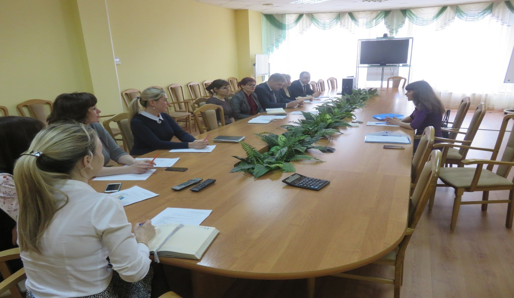
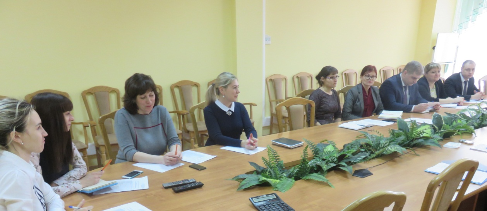

Семинар с представителями АО «Россельхозбанк»
05 апреля 2017 года на базе АО «Россельхозбанк» (далее – Банк-партнёр) состоялся семинар на тему: «Новые условия взаимодействия АО МК «Фонд содействия кредитованию малого и среднего предпринимательства Тамбовской области» с финансовыми организациями». Организатором мероприятия выступило акционерное общество Микрокредитная компания «Фонд содействия кредитованию малого и среднего предпринимательства Тамбовской области» (далее – Фонд).
В рамках семинара были рассмотрены новые условия взаимодействия Фонда с Банком-партнёром в рамках программы предоставления поручительств субъектам малого и среднего предпринимательства (далее - субъекты МСП) по кредитным договорам. Также обсудили вопросы о взаимодействии с АО «Корпорация МСП» по двум гарантийным продуктам, направленных на повышение доступности банковского кредитования для субъектов МСП - Согарантия и Синдицированная гарантия, и по программе стимулирования кредитования субъектов МСП («Программа 6,5»).
По итогам семинара определены направления сотрудничества, порядок и формы взаимодействия Фонда и Банка-партнёра.

